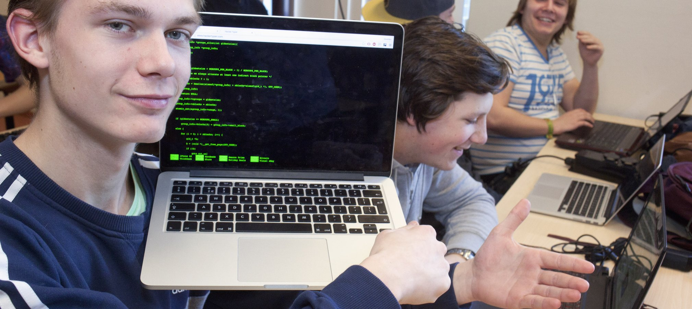

I
k ben de Codeking
►
Home
In de Praktijk
Over ma
Meld je Aan!
Contact
De opleiding
Wat leer je?
Als gamedeveloper programmeer je onderdelen van games. Je leert veel over technologie en programmeren en je komt in aanraking met de vormgeving van games (game art). Want een product moet niet alleen goed werken, het moet er ook aantrekkelijk uitzien. Ook leer je samenwerken met game artists, want zij nemen later de vormgeving voor hun rekening. Omdat je later meestal in opdracht werkt, leer je samen met andere studenten al tijdens je opleiding te werken voor opdrachtgevers.
Je opleiding begint met een periode waarin je samen met studenten van de opleiding Mediadeveloper de lessen volgt. Na deze periode kies je ervoor om verder te studeren als gamedeveloper. Iets voor jou?
Er zijn veel jongeren die graag gamen. Daarom zijn er ook veel mensen die gamedeveloper willen worden. Maar van gamen houden is niet genoeg. Om gamedeveloper te worden heb je specialistische kennis en vaardigheden nodig, en ben je vooral geïnteresseerd in de techniek áchter de games.

Verder ben je in staat om een ingewikkeld probleem uit te pluizen en op te lossen en verbanden tussen gegevens te herkennen. Als je dan ook nog een goed ruimtelijk inzicht hebt, is deze opleiding misschien iets voor jou. Daarnaast vind je het leuk om samen te werken en je werk af te stemmen met anderen en ben je altijd op zoek naar nieuwe (technische) mogelijkheden in jouw vakgebied.